업무의 요구를 읽어 시스템으로 옮기고, 무너지지 않게 운영하는 개발자입니다. 프론트엔드부터 백엔드·인프라까지, 만든 것을 끝까지 책임지는 것을 지향합니다.
| 구분 | 기술 |
|---|---|
| Language | JavaScript, TypeScript, Java, Python |
| Frontend | React, Redux, Recoil, Vite, Three.js, SCSS |
| Backend | Spring Boot, Node.js (Express/ESM), FastAPI |
| Database | MySQL, MongoDB |
| Infra / Cloud | AWS (EC2·VPC·S3·WAF·IDS·ECS Fargate·CDK·Secrets Manager), Docker |
| AI / Agent | LangGraph, RAG (BM25·벡터 하이브리드), LLM API 연동 설계 |
| Automation | Playwright, Google Sheets API, Apps Script, Cloudflare Workers |
| Tooling | Git/GitHub/GitLab, Jira, Figma |
반복되는 대외 커뮤니케이션 업무를 자동화한 사내 시스템. 요구사항 정의부터 설계·구현·운영·클라우드 이관까지 단독 담당.
수집(2단계 파이프라인) → 규칙 기반 분류 → 검토 큐(사람 판단)
→ 발송(검증 게이트 · 일일 한도 · 라운드로빈) → 수신거부 처리
└ 데이터 저장소: 스프레드시트(SSOT) — 현업이 직접 열어 수정page 인스턴스를 태스크 간 공유해 생긴 경합임을 규명 → task-scope page로 전환해 해결cdk bootstrap의 admin 권한 요구로 보안상 반려되자, CDK 없이·admin 없이 배포하도록 재설계하고 요청 권한을 ECS 실행 역할 1개 + 리소스 한정 PassRole로 축소. 시크릿 접근도 단일 ARN으로 제한하고 수동 배포 런북 작성ℹ️ 사내 시스템이라 코드·상세 수치는 공개하지 않습니다. 아키텍처와 의사결정 과정은 면접에서 설명 가능합니다.
"지금 있는 그 자리에서, 바로 걷기 시작하세요." AI·SW마에스트로 17기 본과제 (3인 팀)
프로젝트의 약점(gap)을 먼저 분석하고, 그 기준으로 멘토를 근거와 함께 추천하는 LangGraph 기반 에이전트. (AI·SW마에스트로 AI 기술교육 팀 과제, 5인)
StateGraph로 6개 노드 배선 + 조건 라우터 2종 구현POST /recommend + 인메모리 세션으로 멀티턴 확인질문 왕복 처리api.ts ↔ response.py) 전 필드 1:1 정합 검증 → 테스트 90개 전부 통과, PR 머지로 E2E 완성소비 절약 습관을 게임처럼 도와주는 웹 서비스. SSAFY 10기 특화 프로젝트 우수상 🏆
| 시스템 아키텍처 | ERD |
|---|---|
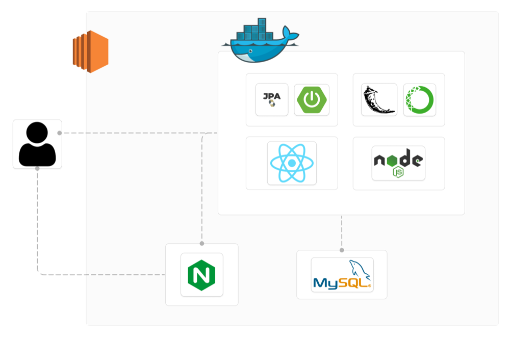 |
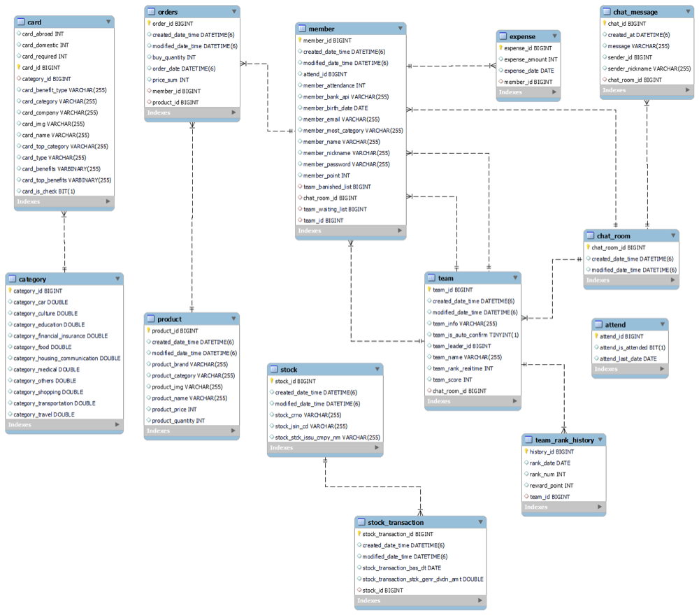 |
본인 구현 화면
| 로그인·출석 | 회원가입 | 마이페이지 |
|---|---|---|
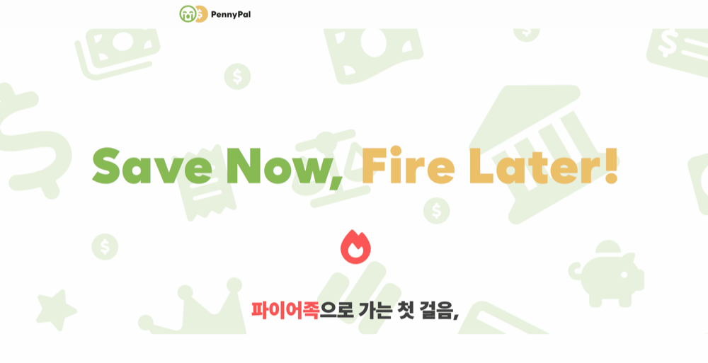 |
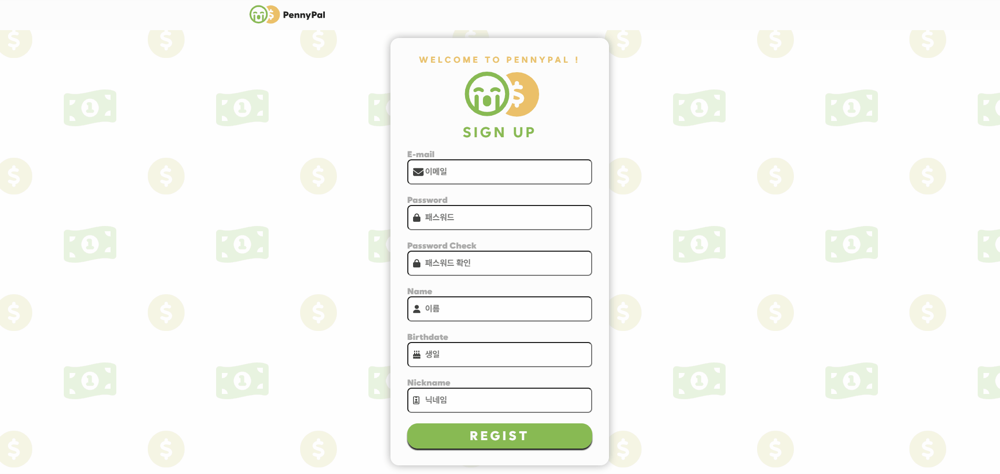 |
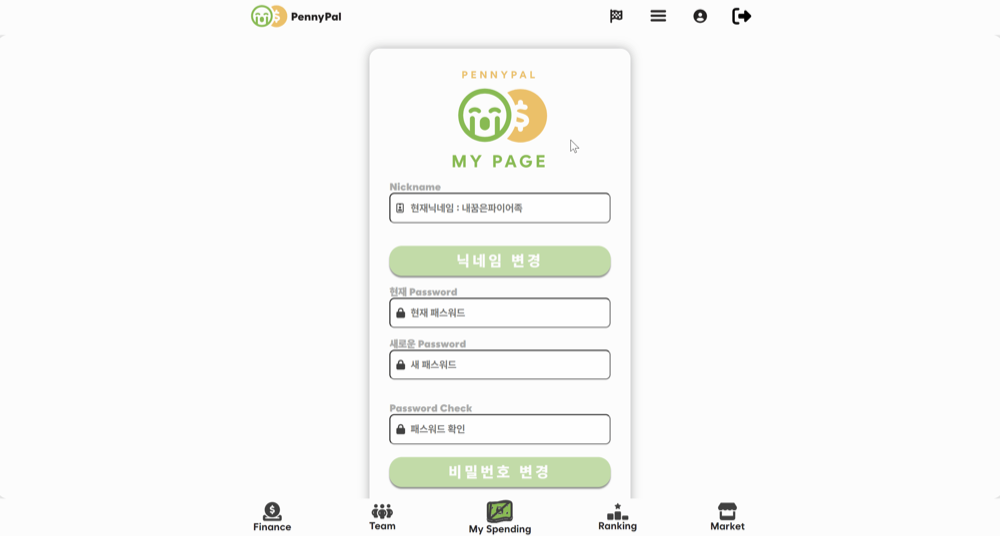 |
| 카드 정보 검색 | 주식 정보 확인 |
|---|---|
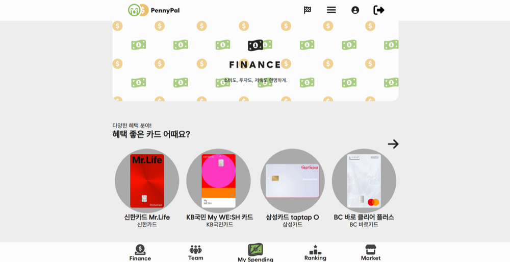 |
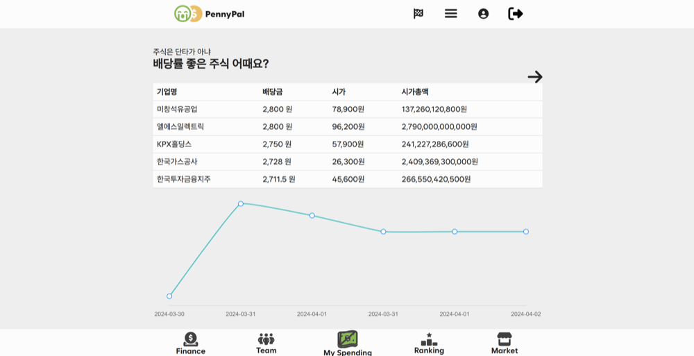 |
"평범한 하루에 찾아온 별일" — 우주의 별에 일기를 쓰고 과거 기억을 주기적으로 재발견. SSAFY 공통 프로젝트 우수상 🏆
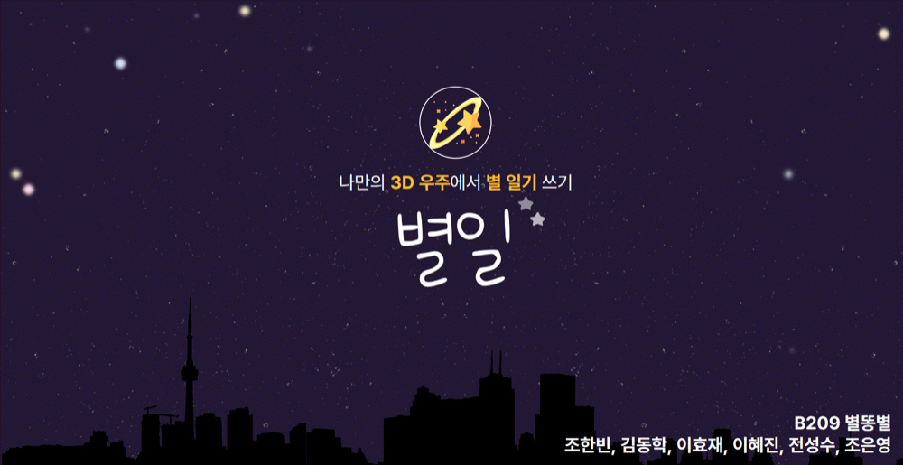
| 시스템 아키텍처 | 개발 환경 |
|---|---|
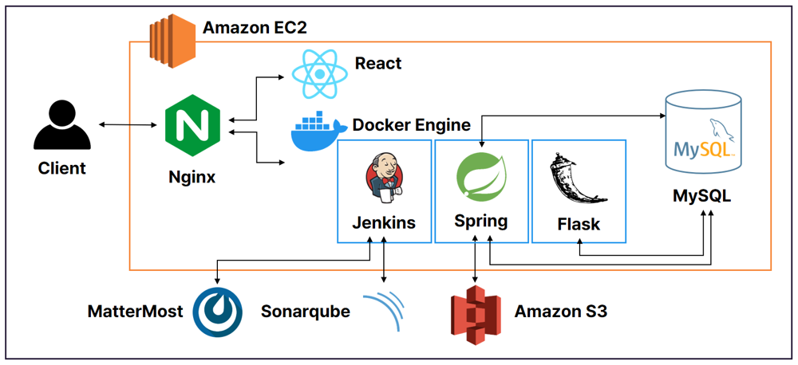 |
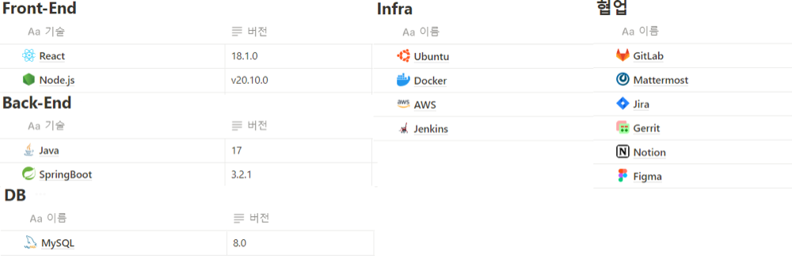 |
| 로그인 | 일기 작성 | 별자리 형성 |
|---|---|---|
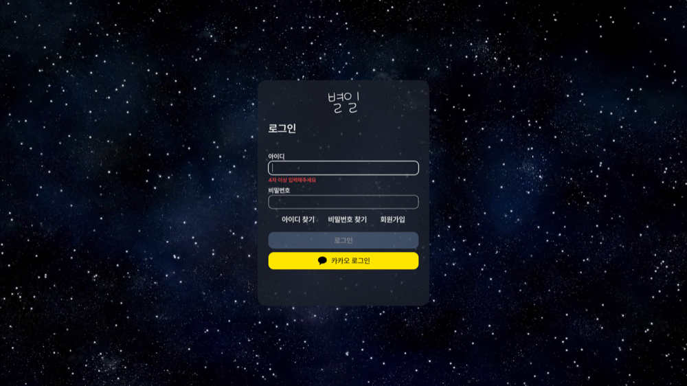 |
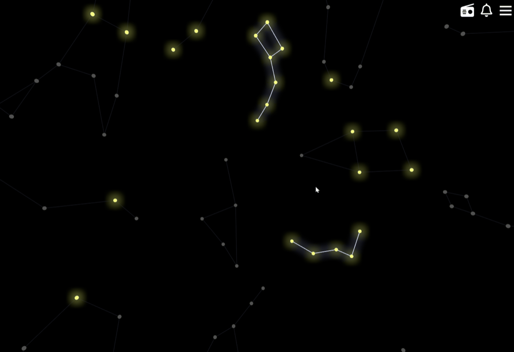 |